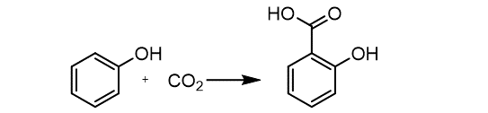

Atom Economy
What is Atom Economy?
Atom economy is a key metric in green chemistry, introduced by Barry Trost to quantify how efficiently a chemical reaction utilizes its starting materials. A high atom economy means fewer atoms are wasted as byproducts, reducing environmental impact and improving resource efficiency. Traditionally calculated manually, our project automates this process, making it faster and more accessible for researchers, educators, and industry professionals.
| Example of Aspirine Synthesis Pathways | |
|---|---|
| I. Esterification | |
| II. Via Acetyl chloride | |
| III. Kolbe-Schmmitt reaction followed by acetylation |  |
| IV. Acetylation with acetic acid |
We have developed a computational framework that leverages reaction SMILES: a text-based representation of chemical reactions, to calculate atom economy with precision. By parsing SMILES strings, our tool identifies reactants, products, and byproducts, then computes the percentage of atoms from reactants incorporated into the desired product. This method eliminates tedious manual calculations and enables high-throughput analysis of complex reactions.
Key features of our approach:
-- Automation: Processes large datasets of reactions quickly using Python-based algorithms. -- Accuracy: Validates atom economy calculations against established chemical principles. -- Scalability: Applicable to both small-scale educational exercises and large-scale industrial applications. -- Open Access: Designed to support researchers and educators in adopting sustainable practices.In a world increasingly focused on sustainability, optimizing chemical processes is critical. Our tool empowers chemists to:
-- Evaluate and compare the efficiency of synthetic routes. -- Design greener reactions with minimal waste. -- Educate students on sustainable chemistry principles with real-world applications.-- Try It Out: access it directly on mybinder.org